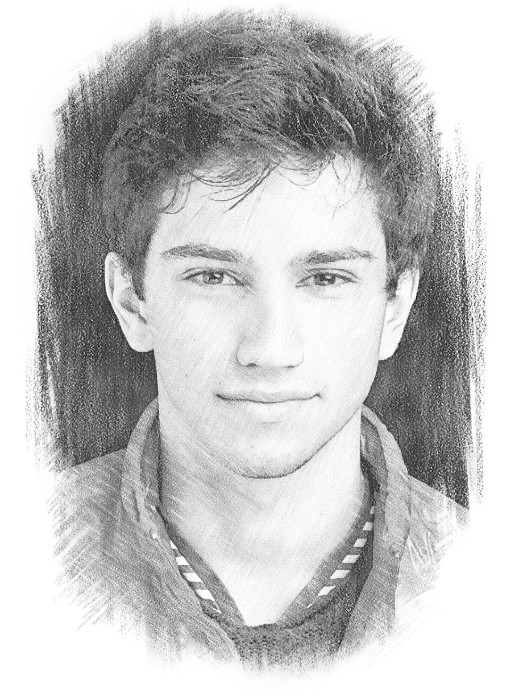
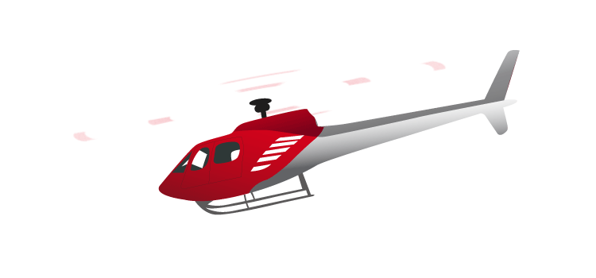

I am a Bulgarian boy who has been living in the Silicon Valley for over 20 years.
During the day, I work on AI & ML Systems.
Outside of work, I try to make good use of my time, and chase my gradients of interest every week.